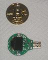
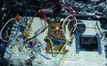

A hardware wallet is a special type of bitcoin wallet which stores the user's private keys in a secure hardware device.
They have major advantages over standard software wallets:
- private keys are often stored in a protected area of a microcontroller, and cannot be transferred out of the device in plaintext
- immune to computer viruses that steal from software wallets
- can be used securely and interactively, as opposed to a paper wallet which must be imported to software at some point
- much of the time, the software is open source, allowing a user to validate the entire operation of the device
This page is an attempt to summarize all the known developments of hardware wallets that can use Bitcoin as part of their operation.
Purchasable hardware wallets (ordered chronologically)
Pi Wallet - cold storage
{kind=link}
The Pi-Wallet is a small computer with the Armory bitcoin client.
Transactions are signed offline, then transferred on a USB stick via Sneakernet to an online system for broadcasting.
?TREZOR The Bitcoin Safe
{kind=link}
?TREZOR is a secure bitcoin storage and a transaction signing tool. The private keys are generated by the device and never leave it thus they cannot be accessed by a malware.
It uses a deterministic wallet structure which means it can hold an unlimited number of keys (BIP 0032/BIP 0044). A recovery seed is generated when the device is initialized. In case TREZOR gets lost or stolen, all its contents can be recovered using this seed (private keys, bitcoin balance and transaction history) into a new device or another BIP 0039/BIP 0044 compatible wallet.
TREZOR also introduced a unique way of PIN entering preventing keyloggers from recording it even when entered on a compromised computer. An encryption passphrase can be set on top of the PIN protection. More passphrases can be used for plausible deniability.
E-shop BuyTrezor.com TREZOR Documentation BitcoinTrezor.com
Ledger HW.1 - USB Smartcard Hardware Wallet
{kind=link}
HW.1 is an implementation of a deterministic (BIP 0032) Hardware Wallet on a USB smartcard.
It is typically used as a blind secure device for multi signature transactions - holding a set of derived private keys and signing transactions without requiring user confirmation.
Power users can rely on it to confirm all transactions with a second factor scheme turning the dongle into a keyboard typing what the user is supposed to have signed, as a protection against malware.
It is also possible to customize HW.1 for more specific needs, such as creating a prepaid card without revealing the deterministic seed before it is received by the user, or securing bitcoin transactions on a server.
E-shop Technical Documentation
Ledger Nano - USB Smartcard Hardware Wallet
{kind=link}
Ledger Nano protects your Bitcoin data within a smartcard. Its micro-processor certified against all types of attacks (both physical and logical), and has been used in the banking industry for decades (think credit card chips). The device connects to your computer through the USB port and will do all the Bitcoin cryptographic heavy lifting such as signing transactions inside its secure environment. You can therefore use your Bitcoin account with maximum trust, even on an insecure or compromised computer.
The second factor verification of the transaction signature can be done either with a paired smartphone (Android, iOS) or a physical security card.
The Ledger Wallet Chrome application (available also on Chromium) provides an easy onboarding as well as a seamless user experience, and the Nano is compatible with numerous third party software: Electrum, ?Mycelium, ?GreenAddress, Greenbits, ?Coinkite and Copay.
Ledger Nano product page Source and specifications
Ledger Unplugged - NFC Smartcard Hardware Wallet
{kind=link}
The Ledger Unplugged is a credit card sized NFC hardware wallet. It embeds an open source Java Card app and is compatible with all NFC enabled Android phones.
The device can be used with Mycelium or Greenbits. In case of loss, you can restore it on any Ledger Wallet (Nano or another one) or all other compatible solutions (BIP 39).
Ledger Unplugged product page Source code
BWALLET TREZOR clone
{kind=link}
BWALLET is a clone of Trezor by a Chinese company. Trezor code is open source and this device operates like a Trezor. However, this product has been reviewed by Merek aka Slush(Trezor developer) and he has found some problems which makes this device less than 100% compatible, for example it doesn't work with myTREZOR.com website and it does not work with Trezor official firmware.
KeepKey: Your Private Bitcoin Vault
{kind=link}
KeepKey is a USB device that stores and secures your bitcoins. When you entrust KeepKey with your money, each and every bitcoin transaction you make must be reviewed and approved via it's OLED display and confirmation button.
KeepKey has a unique recovery feature utilizing a rotating cipher to restore private keys with a BIP 0039 recovery seed. This means it is not necessary to store your private keys on KeepKey: the recovery process is secure enough so that KeepKey can be used as a transaction device for paper wallets.
CoolWallet: The Ultimate Bitcoin Safe
{kind=link}
CoolWallet is a credit card sized Bluetooth device that stores and secures your bitcoins and private keys. It fits in your wallet and works wirelessly.
Every Bitcoin transaction must be manually confirmed and approved through its e-paper display and button.
CoolWallet only acknowledges the paired smartphone. Whoever stole the CoolWallet are not able to steal any bitcoins. Using recovery Seed can restore all your bitcoins in case you lost the device.
coolbitx.com Source and specifications
BlochsTech card: Your user friendly Bitcoin wallet
{kind=link}
The BlochsTech open Bitcoin card is an open protocol secure hardware Bitcoin wallet your grandmother could use. For shops it's faster to accept than slow QR code based wallets and more reliable as it works offline.
Currently it's of course in a novelty phase like Casascius coins (of which thousands were sold), however in the long run it is fully capable of functionally replacing the VISA system in all nations.
BitLox Bitcoin Hardware Wallet
{kind=link}
BitLox is a metal cased (aluminum or titanium) bitcoin hardware wallet that works with their own web based wallet by USB and apps for iPhone and Android using Bluetooth LE.
At present it is the only bitcoin hardware wallet you can buy that works with iPhone. The device weighs one ounce and is the size of a credit card 4 mm thick.
Bitlox allows you to set up hidden wallets. Unlike other hardware wallets your seed is never displayed on a connected computer or phone but only on the Bitlox. All your wallet, device and transaction PINs are only entered on the BitLox and never on any app.
BitLox has also implemented several advanced security features not available on any other bitcoin hardware wallet.
Not purchasable hardware wallets
BitcoinCard Megion Technologies-Card based wallet
{kind=link}
Incorporates a e-paper display, keypad, and radio (custom ISM band protocol.) Unfortunately it is fairly limited in terms of transaction I/O, requiring a radio gateway or another bitcoincard wherever funds need to be transferred.
BitSafe - allten/someone42's hardware wallet
 Final BitSafe announcement
{kind=link}
Signing transactions only, requires USB host software for transactions & USB power. Has a OLED display and Confirm/Cancel buttons. Evolved out of someone42's prototype below, and has significant contributions from someone42 as well.
someone42's original prototype
 Hardware Bitcoin wallet - a minimal Bitcoin wallet for embedded devices
{kind=link}
Signing transactions only, requires USB host software for transactions & USB power. All work is rolled into the above BitSafe wallet currently.
Other/Defunct but with good discussion:
natman3400's BitClip Jun 2011 https://bitcointalk.org/index.php?topic=24852.0
Seems to have gone defunct around Dec 2011. Some good ideas though and seemed to have started on execution.
jim618 hardware wallet proposal Apr 2012 Dedicated bitcoin devices - dealing with untrusted networks
Great discussion and good ideas from jim618. Also linked the following video:
Prof. Clemens Cap's hardware wallet? (video:)Clemens Cap about electronic bitcoin wallet at EuroBit
Clemens Cap of Uni Rostock explains the Electronic Bitcoin wallet device he's working on. It's based on adafruit microtouch device.
ripper234's discussion based on Yubikeys Aug 2012 Having a YUBIKEY as one of the parties for m-of-n signatures
The use of Yubikeys. They only support symmetric crypto, so you'd have to trust the host device.
kalleguld's hardware wallet proposal Oct 2012 Proposal: Hardware wallet (Win 3 BTC)
- Vaporware: Matthew N Wright's ellet ANN The world's first handheld Bitcoin device, the Ellet! (Vaporware)
Smart Card based wallets
This type of device requires complete trust in the host device, as there is no method for user input. See Smart card wallet
Related Resources
- Best Bitcoin Hardware Wallet 2015 - reviews of all bitcoin hardware wallets.
- TREZOR vs. Ledger - User reviews and Reddit feedback
- slush's Hardware wallet wire protocol discussion: Hardware wallet wire protocol
- kjj's Todo List discussion for client protocol requirements: in topic Re: Split private keys
- paybitcoin's original post: Hardware Wallet Roundup
- Buy Bitcoin Worldwide - information about using Bitcoin hardware wallets for cold storage.
- Various Hardware Wallets and Reviews: Offline Hardware Wallets
- Ledger Wallet Review